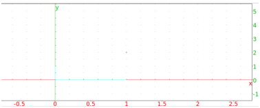

12.6.10 The barycenter in the plane: barycenter
See section 13.4.7 for barycenters of objects in
space.
The barycenter command draws the barycenter of a set of
weighted points. The points and their weights (real numbers) can be
given in three different ways.
-
A sequence of lists of length two.
The first element of each list is a point and the second element is
the weight of the point.
- A matrix with two columns.
The first column of the matrix contains the points and the
second column contains the corresponding weights.
- A matrix with two rows and more than two columns.
The first row contains the points and the second row the
corresponding weights.
For example, the following commands will draw the barycenter of the
points (1,1) with weight 1, (1,−1) with weight 1 and (1,4)
with weight 2.
Input:
barycenter([1 + i,1],[1 - i,1],[1 + 4*i, 2])
or:
barycenter([[1 + i,1],[1 - i,1],[1 + 4*i, 2]])
or:
barycenter([[1 + i, 1 - i, 1 + 4*i],[1,1,2]])
Output:
